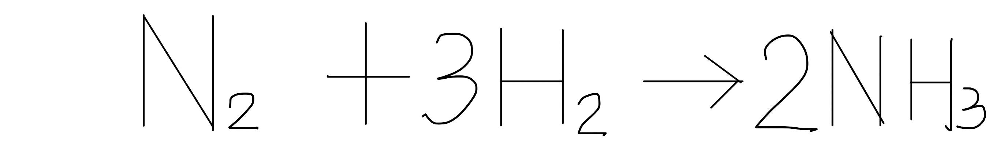

酸鹼鹽
Acid and Base
酸鹼性是使用物體品嘗起來的味道來決定的嗎？還是要透過什麼化學儀器或方式得知呢？讓我們一起探索！

(1)無色、具刺激(2)蒸發到空氣中的HCl分子與空氣中的水蒸氣結合成的酸霧刺鼻，會傷害人體器官及黏膜。註：工業用含鐵離子因此呈淡黃色。
(1)無色液體，會腐蝕皮膚(2)受光照射會產生紅棕色有毒的二氧化氮 --->以深色玻璃瓶盛裝(3)用途：肥料、炸藥TNT(國防工業之母)
(1)沸點在攝氏300度以上註：可用以製造其他酸
(2)腐蝕性極強，具強烈脫水性，可讓蔗糖等碳水化合物脫水(3)密度比水大，因此稀釋濃硫酸應將硫酸緩緩加入水中(4)用途：鉛蓄電池、製造醫藥、染料、衣料、造紙
(1)白色固體，具腐蝕性，溶於水中會放熱。(2)易吸收水氣和二氧化碳變質(潮解)--->需密封保存(3)用途：肥皂、人造絲
(1)白色粉末(2)易吸收空氣中水蒸氣--->乾燥劑(3)氧化鈣溶於水中，形成氫氧化鈣(俗稱熟石灰、石灰水)--->檢驗二氧化碳＊註:澄清石灰水遇二氧化碳會形成碳酸鈣而變白色混濁
(4)用途：檳榔添加物(石灰CaO)
(1)無色、具臭味、易溶於水且比空氣輕的氣體註：HCl和 會反應形成白色煙霧狀氯化銨 微粒
(2)用途：製造肥料、稀釋後可做為清潔用途註：哈柏法製氨 